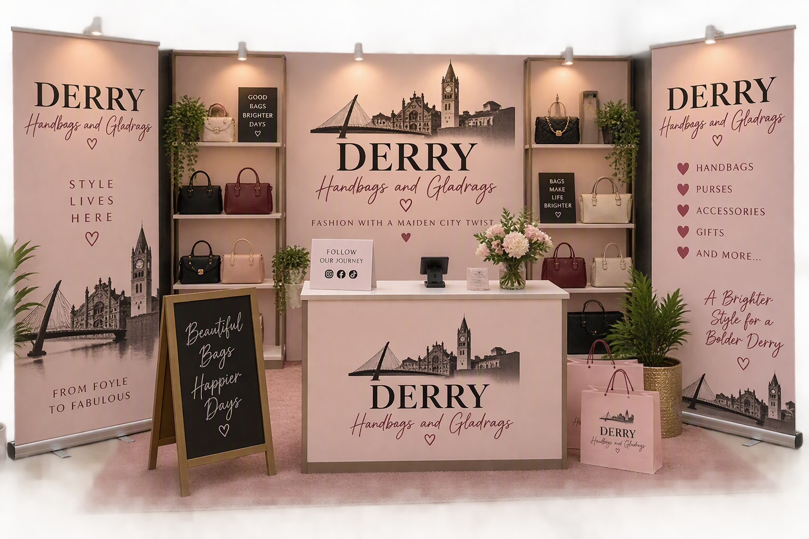

Our story
Founded in Derry by two handbag enthusiasts in 2017, Handbags and Gladrags focuses on sustainable and quality bags
Values
- Designed with recycled materials and a lifetime repair guarantee.
- Fair wages, ethical factories, and clear supply chains.
- Supporting and protecting traditional weaving communities globally
Find us
- Craft Village, Derry
- Pop-ups: Foyleside, across from McDona;ds
